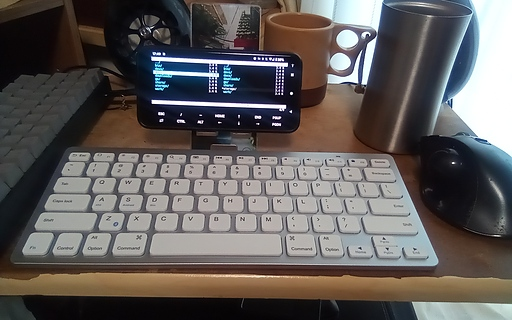

07 月 15日 ( 木 )
Google Pixel 5 に Termux を入れたときのメモ
Abstract
Android 上で Termux という Linux 端末エミューレターを使うことができるということを知ったのでインストールしてみた。すると Vim、OpenSSH、git等いろいろ使えることがわかり、バッテリーの問題を除けば単体テストくらいは Google Pixel 5 で可能なことがわかった。外出先での作業にギリギリ使えそう。

Install Termux
Install Package
- openssh
- openssh-tool
- vim ( ソースからビルド後削除 )
- git
- tig
- curl
- wget
- golang
- perl
- python2
- nodejs
- node-fetch ( used npm )
- Bluebird ( used npm )
- make
- fzf
- fish
- tmux
- vifm
Built Software
Not Yet Support
- Category :
- 日記
- スマホ
- スマートフォン
- キーボード
- Android
- Termux
- Google Pixel 5